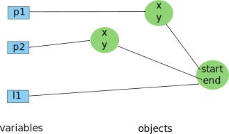
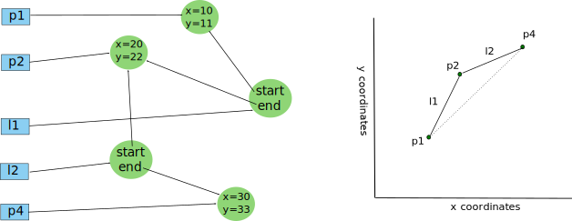

sprint=java.basics
task=t2
step=t2-s2
Let's have a look at a bit more about references and aliasing.
Uncomment the call site of the
method moreAboutAliasing
in the class JavaBasicsStep2
towards the end of the method
main.
Then set a breakpoint in that method
moreAboutAliasing.
Once suspended in the method moreAboutAliasing,
single step through the code (using F6),
paying attention to the following points.
Considérons encore les références et l'aliasing.
Positionnez un breakpoint sur la méthode
moreAboutAliasing
dans la même classe JavaBasicsStep2
et poursuivez (resume) l'exécution (F8).
Une fois suspendu dans la méthode moreAboutAliasing,
exécutez en pas à pas (using F6),
en faisant attention aux points suivants.
-
Reference variables can be used to access fields:
p1.x = 10;
p1.y = 11;
This is not different than using
this in the body of a method.
Remember that we saw the use of this
earlier in the class Point.
Remember that the built-in variable this
always refers to the receiver of the method invocation.
Ce n'est pas différent que d'utiliser this
dans le corps d'une méthode. Rappelez-vous, nous avons vu l'usage de
this
précédemment dans la classe Point.
rappelez-vous la variable built-in this
référence toujours le receveur de la méthode en cours d'exécution.
void translate(int dx, int dy) {
this.x += dx;
this.y += dy;
}
-
Notice the effect of aliasing:
when translating the point p2,
we are also translating the point p3.
Of course we are,
since the variable p2
and the variable p3
are aliasing the same object, that is, they both reference
the same object. Look at the lines with calls to the
function ensure, checking that fields of both p2 and p3
have the same values, although we modified only the fields
of p2 by translating it. Therefore, we know that p2 and p3 are
aliasing the same object.
Notez l'effet de l'aliasing: lorsque le code translate le point
p2, il translate aussi le point p3.
Bien sûr puisque c'est le même point.
Les variables p2
et p3
référencent le même objet.
p2.translate(20,22);
ensure(p2.x==20);
ensure(p2.y==22);
ensure(p3.x==20);
ensure(p3.y==22);
Fields as object references
We saw that fields are typed in Java.
Remember the fields of the class
Point?
They are both declared with
int,
stating that the fields can contain
integer values.
Java defines several primitive types such as
int,
char,
or float,
to name only a few.
Nous avons vu que les champs définis
dans une classe ont un type. Par exemple,
dans notre classe
Point,
les deux champs ont le type
int.
Le type d'un champ dit que ce champ contiendra
des valeurs de ce type là.
Java définie un certain nombre de types standards,
comme
int,
char,
ou float,
pour n'en nommé que quelques uns.
Fields can also be declared as holding
the identity of an object, they are called
reference fields and they are analogous to
reference variable. Therefore,
a reference field references an object,
which means it contains the identity of an object
or null.
Les champs peuvent aussi être des références,
chaque champ contenant l'identité d'un objet
ou null.
Look below at the class Line,
representing a line between two points.
class Line {
Point start;
Point end;
void translate(int dx, int dy) {
this.start.translate(dx, dy);
this.end.translate(dx, dy);
}
}
See the two reference fields, called
start and
end. Look below
at how you can create a line object from
two points:
Point p1 = new Point();
Point p2 = new Point();
Line l1 = new Line();
l1.start = p1;
l1.end = p2;
Look at the figure below, it shows you the resulting object
graph. The nodes are the objects, in this case, the two points
and the line. The edges represent who knows who, meaning that
there is an edge from a node N1 to a node N2 if the object O1
corresponding to the node N1 contains a field with the reference
of the object O2 corresponding to the node N2. That is, the object O1
knows the object O2.
Regardez la figure ci-dessous, elle illustre le graphe d'objet
correspondant. Dans ce graphe, les noeuds correspondent aux objets.
Ici, nous avons deux noeuds pour les deux points et un noeud pour l'objet
ligne. Les arcs entre les noeuds représentent la relation "qui je connais",
dans le sens suivant. Si il existe un arc d'un noeud N1 vers un noeud N2,
alors l'objet O1 correspondant au noeud N1 contient un champ dont la valeur est
la référence de l'objet O2 correspondant au noeud N2.

The concept of object graph is paramount in object-oriented programming.
Remember that the first goal of object-oriented programming is to create
objects and organize them into a population of cooperating objects.
The object graph is a graphical
representation of that population of objects, showing the objects
and how they refer to each other. The graph shows you who knows who
and therefore who can invoke methods on who.
Le concept de graphe d'objet est cruciale pour bien programmer en
orienté-objet.
Rappelez-vous que le premier but de la programmation orientée-objet
est d'organiser une population d'objets pour qu'ils puissent collaborer.
Le graph d'objet est donc important à visualiser car il représente cette
population d'objets et montre comment les objets se référencent les uns
les autres. Le graphe vous montre donc qui connait qui et du coup qui
peut invoquer des méthodes sur qui.
There is again nothing better than the debugger to understand these things.
Uncomment the call site
to the method aboutLines
towards the end of the method
main.
Then set a breakpoint in that method.
Once suspended in the method aboutLines,
single step through the code (using F6).
As you step through the code, look at the Variables view
and the object ids the debuger is showing you. Confirm the
object graph depicted above.
Il n'y a à nouveau rien de mieux que le debugger pour comprendre ces aspects.
Positionnez un breakpoint dans la méthode
aboutLines.
Poursuivez l'exécution avec F8 et une fois suspendu dans la
méthode aboutLines,
exécutez en pas à pas (F6).
Prenez le temps de regarder la vue Variables et les
"object ids" que le debugger vous montre. Confirmez votre bonne
compréhension du graphe d'objets décrit précédemment.
Now, pay special attention to what happens when translating the line
by (2,-2). The intent to translate the line is clear and so it is also
clear that the points at the two ends of the line will be translated
as well. But what is less clear when reading the code is that the
point "p3" will also be translated as a side effect of
translating the line. Why? Simply because there is no "p3" object,
there is the object referenced by the variable
p3, and that object is also referenced
by the field end in the line object
we just translated. Therefore, when we translated the line, we translated
the object referenced by the variable p3
as well.
Faites attention à ce qui se passe lorsque la ligne est translatée
par le déplacement (2,-2). L'intention de translater la ligne est
claire et il semble donc clair que les points qui repésentent les
deux extrémités de la ligne doivent être translatés. Mais ce qui
est moins clair en lisant le code est que le point p3 sera aussi
translaté, par effet de bord. Pourquoi? Parce qu'il n'y a pas
d'objet "p3", il y a un objet référencé par la variable p3 et
cet objet est aussi référencé par le champ
end de la ligne que nous
venons de translater. Aussi, l'objet que référence la variable
p3 a été translaté.
If you have difficulties understanding the code or what happens when
executing it, please ask for help. Aliasing and object graphs are important
concepts that you must master.
Aliasing through object fields
Aliasing is not just a challenge with local variables and
arguments. Aliasing can happen through reference fields as
well. Again, be reminded that aliasing is neither bad or
good, it must be understood and controlled. In other words, a developer
must understand how the objects are aliased in his program.
It is because it is your responsability as a developer
that we are spending time to explain it in details.
Les alias n'arrivent pas qu'entre les variables et
les arguments, ils se produisent aussi entre les champs
de différents objets. Rappelez vous, les alias sont
inévitables et ne sont ni bons ni mauvais. Mais il est
de votre responsabilité de les comprendre et de les
maîtriser.
Please comment out the call site to
the method aboutLines,
towards the end of the method
main,
and uncomment the call site to the method
moreAboutLines.
Then set a breakpoint in the method
moreAboutLines.
Then launch the execution and when suspended in the method,
single step through the code (using F6). Draw the object
graph at the end of the method.
Continuons l'exécution dans la méthode
moreAboutLines.
Premièrement, dé-commentez l'invocation vers la fin de la
méthode main.
Deuxièmement, positionnez un breakpoint dans la méthode
moreAboutLines.
Puis lancez l'exécution et quand vous serez suspendu dans la méthodé,
exécutez en pas à pas (F6). Dessinez le graphe d'objets à la fin
de la méthode.
Are you done with drawing the object graph?
Yes
No
Take your time.
Well done.
Please ask for help.
This is the object graph you should have drawn, on the left-hand side.
On the right-hand side, we have the geometrical representation of the
lines and points, on a X-Y plane, in the mathematical sense.
Ceci est le graphe d'objets que vous devez avoir dessiné,
sur le coté gauche. Sur le coté droit, nous avons la représentation
géométrique des lignes et points, sur un plan X-Y, au sens
mathématique.
Notice how the two lines are sharing the point p2.
In other words, we can say that the point p2 is aliased
by the two line objects. So translating p2 would modify
both lines.
To verify this, please uncomment the last line of the method
moreAboutLines:
Notez comment les deux lignes partagent le point p2.
Autrement dit, nous pouvons dire que p2 est "aliasé" par
les deux objets ligne. Donc, translater p2 engendrerait
la modification des deux lignes. Pour vérifier cela,
décommentez la dernière ligne de la méthode
moreAboutLines:
static void moreAboutLines() {
...
// l1.rotate(5,5);
}
Did rotating the line l1 changed the object graph?
Yes
No
Really? Does rotating a line changes the value of
any of its fields? Absolutely not since the line
still refers to the very same two point objects.
Remember, a reference field does not contain an
object, but the identity of an object.
Rotating a line is translating a point and translating
a point only changes the integer values in the fields
of the point object. So the object graph is not changed
by rotating the line l1.
Vraiment? Est-ce qu'une rotation d'une ligne modifie la
value d'un des champs de l'objet ligne? Pas du tout
puisque la ligne continue de référencer les mêmes
deux objects (Point). Rappelez vous, un champs
référence ne contient pas l'objet référencé, mais
l'identité de l'objet référencé. La rotation d'une
ligne engendre la translation d'un point et cette
translation change les valeurs des champs x et y de
cet object point. Il n'y a donc aucun changement du
graphe d'objets.
Correct.
Please ask for help.
Look at the effect of translating
l1.

As you can see, the object graph has not changed, since we
didn't change any reference. But you can see that the
represented geometrical lines have changed if drawn. Notice that because
of the aliasing in the object graph, rotating one line has
side effects on the other line. This is why aliasing is
important to understand when you write code.
Comme vous le voyez, le graphe d'objet n'a pas changé,
puisque nous n'avons pas changé de champs références.
Mais les lignes géométriques représentées pas ces objets
ont changé dans le plan. Remarquez que la rotation
d'une des lignes entraine celle de l'autre, parce que
les deux lignes alias un même point, on dit aussi
qu'elles partagent un point.